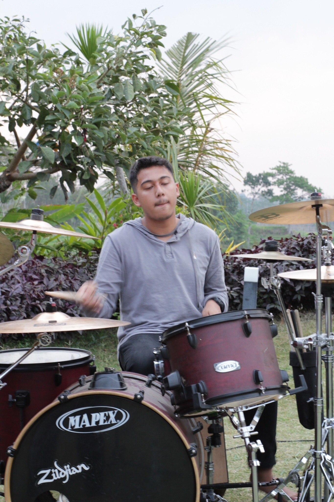

Druming
Druming adalah suatu aktivitas memukul alat perkusi dengan tempo dan nada yang tepat. Drum adalah alat perkusi yang cara memainkan nya dalah di pukul dengan stick, tanpa adanya drum dalam suatu musik akan terasa sangat tidak enak untuk di dengar
UKM
UKM Resonance, karena aku berkuliah di UC aku bergabung dengan ukm pilihanku yaitu Resonance. Aku di UKM Resonance aktif di bidang perkusi, Aku juga sering di ajak oleh panitia UKM untuk tampil di acara acara yang berkerjasam dengan Resonance. Di UKM ini aku banyak belajar hal baru tentang musik, seperti improvisasi yang baik bagaimana dan juga belajar cara membangun chemistry antar pemain dalam satu band agar musik yang di mainkan bisa enak di dengar oleh orang.
